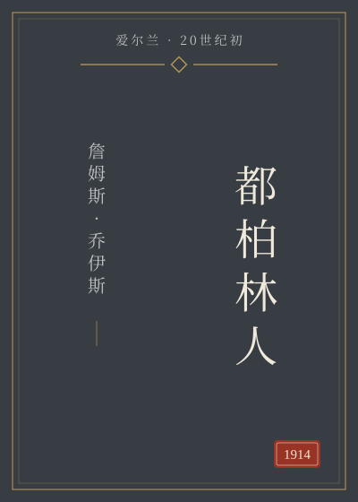
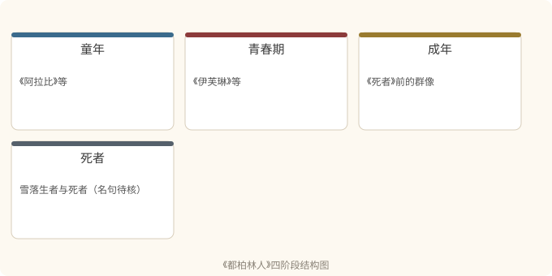

都柏林人
一、基本信息
| 作者 | 乔伊斯 |
|---|---|
| 成书/出版 | 1914年出版（作者页 B093 口径：都柏林人（1914）） James Joyce — Encyclopaedia Britannica（百科全书） |
| 国别/地区 | 爱尔兰 |
| 时代 | 现当代 · 20世纪初 |
| 体裁 | 短篇小说集 |
| 语言 | 英语 |

《都柏林人》四阶段结构图（主题·结构图）
二、创作背景
作者页（B093）：乔伊斯 major_works 载'都柏林人（1914）'（B093 作者页定位，详见 youlisisi 条核对）。
'瘫痪'（paralysis）主题：乔伊斯自述（通说待核——致出版商信）。
三、内容脉络
十五篇（篇数通说）：童年—青春期—成年—公共生活的四个阶段（结构通说待核）。
末篇《死者》：白雪中的'雪落所有的生者与死者'（名句通说待核）。
四、主要人物表
| 人物 | 身份 | 说明 |
|---|---|---|
| 加布里埃尔 | 《死者》主角 | 雪夜的自省（通说待核） |
| 伊芙琳 | 少女 | 《伊芙琳》的抉择（通说待核） |
五、主题与艺术特点
- 都柏林的'瘫痪'（通说待核）。
- 顿悟（epiphany）技法（通说待核）。
- 逃离与滞留（通说）。
六、影响与评论
- 作者页：乔伊斯成名前的重要作品（B093 作者页口径）。
James Joyce — Encyclopaedia Britannica（百科全书） - 现代短篇小说的经典（通说待核）。
James Joyce — Encyclopaedia Britannica（百科全书）
七、阅读建议
难点
- 爱尔兰语词与政治背景。
- 顿悟的识别。
- 《都柏林人》（上海译文出版社王逢振译本，通说待核）。
- 英文原版（公有领域）。
先《都柏林人》后《尤利西斯》。
八、待核实
- 十五篇篇目核对。
- 1914年（Grant Richards说，出版波折）核对。
- '瘫痪'自述信出处待核。
本页主要来源
乔伊斯的其他收录作品：尤利西斯